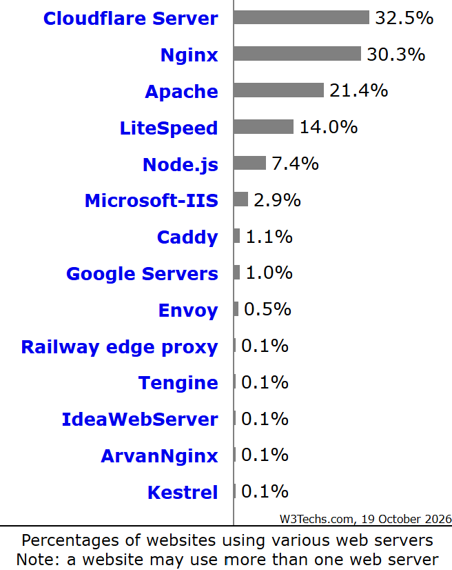

As development of NCSA HTTPd slowed down, a group of developers who have been writing updates for NCSA HTTPd individually came together and combine their work into a public codebase in 1995.The first version of the web server later known as Apache was release in April of 1995 built on top of NCSA HTTPd code. It was especially a community made patch for the now unsupported NCSA HTTPd. Apache is currently the second most used web server as of 2026. The Apache software foundation as formed in March 25, 1999 to better organize the development and to have the ability to keep Apache as an open source software. The name “Apache” was originally used to pay tribute to the Native-American tribe who shares the same name. However, a rumor later spread in the community that Apache meant “a patchy server” which matches its origin.
In 2002, Russian software engineer Igor Sysoev was working at a internet company and noticed that the Apache servers they were running could not properly handle a large number of connections at a time dubbed “C10K problem” where server will struggle when there any more than 10,000 connections at a time. Sysoev begin attempting to solve the problem by improving the proxy handling but realized he need to make modules for Apache. Along the way he also improved many different modules but with no luck fixing the problem. Sysoev instead begin to write new software and experimented on “asynchronous event loop for handling HTTP request” which solved the “C10K problem”. Nginx officially release on October 4, 2004 on the same day as the 47th anniversary of the first artificial satellite launch. Nginx is currently the most used web server as of 2026.

| VS. | Apache | Nginx |
|---|---|---|
| Year of Release | 1995 | 2004 |
| Why is was created | To continue the development of NCSA HTTPd | To solve the "C10K problem" and provide better performance under high load |